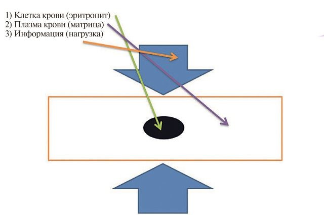
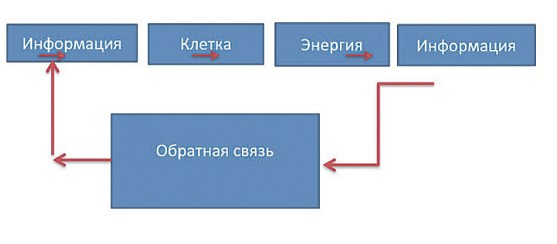

«ЕСМЬ Материя, ЕСМЬ Энергия и ЕСМЬ Информация, и это ЕДИНО».

Природа человека как энергоинформационного объекта Космического Пространства и в наши дни для людей остаётся столь же загадочной, что и тысячелетия назад, несмотря на грандиозные успехи науки и технологии. Слова Создателя: «Человек ещё не известен человечеству» - лучше всего подтверждают сложившуюся ситуацию в мире естествоиспытателей.
Самопроизвольная энергия
Наиболее из интересуемых людей вопросов, конечно, являются вопросы сроков человеческой жизни, а значит, процесса старения, относимые к классу самопроизвольных процессов.
Здесь следует отметить, что все процессы в природе и технике можно разделить на два обширных класса - самопроизвольные и вынужденные (протекающие принудительно)! Очень важно отметить, что все САМОПРОИЗВОЛЬНЫЕ процессы сопровождаются диссипацией (рассеиванием) энергии: работоспособные виды энергии (электрическая, механическая, химическая и другие) превращаются в теплоту окружающей среды.
Можно сказать, описывая человеческую жизнь, что первопричина старения или смерти как общебиологического явления - САМОПРОИЗВОЛЬНЫЙ процесс диссипации (рассеивания) энергии, подверженный воздействию информационных потоков как внутреннего, так и внешнего толка, что и приводит человека к вымиранию по энергетической траектории кратчайшего времени.
Поскольку человеческая жизнь удовлетворяет принципу кратчайшего времени, то приходит понимание того, что продолжительность жизни ЗАРАНЕЕ ПРЕДОПРЕДЕЛЕНА и ЗАДАНА НЕИЗВЕСТНЫМ физиологическим или биофизическим механизмом (назовём это Создателем) сразу после рождения (или даже в период беременности)! Как тут не вспомнить опять о Создателе, ибо, по Его словам, существует определённый период времени после рождения, когда задаётся конечная точка траектории жизни, определяемая 120 годами.
Возникает вопрос: возможен ли, и при каких условиях, контролируемый переход с одной траектории на другую в целях продления активного периода жизни? Человеческая жизнь, процесс САМОПРОИЗВОЛЬНЫЙ, но определённый Создателем, не требует нашего содействия или участия, но процесс ОМОЛОЖЕНИЯ физического и духовного - является процессом принудительным, и для его осуществления должна быть затрачена определённая РАБОТА.
Вопрос омоложения
Приходится делать вывод о том, что долгосрочное омоложение, а точнее, Духовное омоложение, а значит, долгая жизнь - может быть достигнуто только при условии, когда применяемый подход (внутренняя мотивация) не входит в противоречие с теми Программами, которые были заложены Создателем при нашем появлении.
Необходимо отметить, что современная наука ещё со времён Декарта, Лейбница, Ньютона провозгласила, что критерием ИСТИНЫ может быть только эксперимент, главным требованием к которому является полная воспроизводимость результата независимо от места, времени и личности экспериментатора. Требование воспроизводимости есть неявно выраженное стремление ограничить научное познание пределами физической реальности и обеспечить защиту эксперимента от возможных воздействий со стороны Со-Знания экспериментатора.
Можно сколько угодно спорить, но в Природе одновременно существуют три фундаментальные сущности: Материя (в форме вещества), Энергия (Со-Знание, Духовный мир) и Информация!
Следует отметить, что если Материя и энергия доступны нашему восприятию, контролю и измерению, то Информация нематериальна по природе, а значит, по представлениям научного мира, на неё не распространяются физические законы сохранения энергии и вещества. Однако не существует никаких запретов на принципиальную возможность взаимодействия Информации с Материей и Со-Знанием.
Примем, что Матрица Пространства и человек как её часть соединяют в себе три сущности Космоса: Материю, Энергию (Со-Знание) и Информацию, находящиеся в постоянной Гармонии, а сумма (результирующая) этих Сущностей ЕСМЬ постоянная величина для всего Пространства, поэтому их Гармония гарантирует биологическую жизнь (активность и жизнедеятельность), в условиях, когда волновые процессы или РИТМЫ управляют всем сущим на Космическом (Планетарном) Пространстве!
Природа во Вселенной
Наука, наконец, признала, что для всего живого необходимо не только элементальное, но и тонкополевое питание, являющееся важнейшим фактором зарождения и существования жизни. Организм человека и среда его обитания (Природа) - являются единым целым, что обуславливает их взаимное влияние друг на друга. Человек настолько «вписан» в структуру Пространства, что процессы жизнедеятельности и его здоровья подчиняются законам, по которым устроен Великий КОСМОС (Вселенная) и наша планета.
Великая гармония Солнечной системы была создана Высшим космическим разумом для реализации Вселенской программы Преображения Пространства и человека как Великого подобия Бога, о чём говорят все религии мира, который является непосредственным участником и исполнителем этой Программы, вобрав в себя всё СОВЕРШЕНСТВО Мироздания!
ЖИЗНИ
ПРЕДОПРЕДЕЛЕНА И ЗАДАНА
Если же принять во внимание исторический опыт человечества, то возникновение жизни человека должно, прежде всего, вписываться в условия Высшего порядка Мироздания, а с учётом того, что человек как мыслящая биологическая Сущность, состоящая из миллиардов тоже мыслящих клеток (по некоторым источникам, достигающим более 100 миллиардов), то сам человек должен представлять собой Великую Гармонию этого клеточного (микрокосмического) пространства!
Тайна клетки
За последние десятилетия учёные-биохимики, раскрывая ТАЙНУ человеческой клетки, пришли к единому выводу, что это совершенство Природы - человеческая клетка может быть создана только как результат Высшего Творения!
В этом случае исследование Природы и особенностей отдельной клетки человека может явиться возможностью изучения и Внешнего мира, ибо, по словам Создателя (Послание от 05.07.07), «Я всё время подсказываю вам в виде открытий человечества, что есть Единые физические законы, применяемые не только в Плотном плане на планете Земля, но и в Тонких мирах Вечности»!
В наших исследованиях Природы и самоорганизации клеток человека мы исходили из постулата, базировавшегося на научных исследованиях и даже религиозных представлениях о том, что живые организмы на Планете, включая и человека как Высшее СОВЕРШЕНСТВО Природы, есть биологическая форма существования Разума, в виде многомерного и многоуровневого ЕДИНОГО клеточного Пространства, объединённого едиными канонами (законами) Природы и Космоса!
Исходя из этого, целью Холдинга НИИ «Здоровьесберегающие технологии» является изучение поведения отдельной клетки как части Целого (организма человека), способной принимать решения в экстремальных условиях, моделирующих наступление смерти, или обнуление энергии!
Известно, что на здоровье отражается воздействие социально-психологических условий жизни, работы, а также морально-этическое состояние общества. Перед нами стояли две основные задачи: увеличение индивидуальной продолжительности жизни, её качества и увеличение видовой продолжительности жизни (россиян в целом).
Единая сфера
Морфологический анализ жидких кристаллов любой биожидкости позволяет выявить уровень энтропии и обнаружить нарушение или изменение ориентировки кристаллической решётки на надмолекулярном уровне, что даст информацию об изменениях во внутренней системе.
Жидкие кристаллы, например, вода, а особенно кровь (переносчики информации), очень чувствительны к воздействиям окружающей среды, что вызывает энергоинформационные изменения жидких кристаллов в зависимости от уровня воздействия торсионных полей, энергии Космического Пространства!
Прежде всего, следует отметить, что все процессы, происходящие в КОСМОСЕ, на Планете, в самом человеке, в его клеточном пространстве (в отдельной клетке), являются процессами Единого энергообмена, и, конечно, перераспределения информационных потоков, ибо Пространство вне зависимости от масштаба является ЕДИНЫМ, называемым Сферой Разума, или Ноосферой!
Мы все находимся в этом «бульоне Разума», подвергаясь воздействию не только Великих Ритмов Вечности или Планетарных ритмов, но ритмов (более низких частот) человечества, народов и своих родов. Как самый чувствительный инструмент биологического проявления Высшего Разума люди имеют возможность не только чувствовать наличие или отсутствие Великой Гармонии Вечности, но и реагировать на эти ритмы, изменяя или приспосабливая свои гармонии к внешнему информационному воздействию. Следует помнить, что как часть Единого информационного поля мы в состоянии и управлять этими информационными потоками если не на Планетарном уровне, то на уровне Народа и родов, безусловно!
Поэтому, масштабируя человеческие возможности по управлению информационными потоками, можно сразу определиться, что наша адекватная реакция на внешнее (Космическое или Планетарное) воздействие определяет не только срок нашей жизни, но эволюцию Со-Знания как части Великого Космоса. Реакция же людей на информационное пространство на уровне народа, рода или семьи определяет не только продолжительность жизни, но качество проявления в Плотном плане! Реакция же клетки человека (рассматриваемой нами как «маленький человечек», находящийся в информационном поле «человечества» (человека), абсолютно точно определяет продолжительность жизни, вероятность проявления болезни (внутреннего НЕСОВЕРШЕНСТВА) и возможность её излечения.
Медицина будущего
Поэтому если и говорить о медицине современного человечества, то, в соответствии со Словами Создателя об энергоинформационном Единстве Целого и его частей, медицина по существу сводится к управлению информационными потоками, как на уровне человека, так и на уровне человеческой клетки - повторяю, микрочастицы Великого Целого!
Значит, медицина будущего должна быть технологией контроля и управления информационными потоками и как результат управления потоками перераспределения энергии, ибо «ЕСМЬ Материя, ЕСМЬ Энергия и ЕСМЬ Информация, и это ЕДИНО» (Послание от 23.01.16. Книга XIII).
Наша главнейшая задача - научиться измерять, контролировать и управлять энергоинформационными потоками, понимая, что человек и его клетки являются не только приёмниками внешнего информационного поля, но ответными передатчиками этих вибраций высоких и низких частот в окружающее их Пространство, и эта причинно-следственная связь не только вечна, но и определяет целесообразность эволюции и срока жизни человека в Плотном плане (материальном мире)!

Принципиальная схема энергоинформационной профилактики с использованием обратной связи
Анализ поведения человека во внешнем информационном поле заключается в контроле диссипации всех видов энергии, которая является ответной реакцией человека, его организма на изменение ритмов, а это есть так называемая неинвазивная диагностика, или, выражаясь языком физики твёрдого теля, неразрушающий контроль.
Принимаем в качестве основной гипотезы энергоинформационной модели активации клетки человека (а значит, и самого человека) следующее: в процессе информационного воздействия на клетку человека внутри неё происходит перераспределение энергии (информации), и тогда при искусственном разрушении клетки можно зафиксировать количественные характеристики накопленной энергии (информации) как результат ответной реакции на внешнюю информацию (воздействие) Пространства.
Анализ (качественный и количественный) процесса диссипации энергии, по нашему мнению, может дать ответ не только на реакцию здоровой клетки на внешнее информационное воздействие, но и показать те искажения в комплементарном клеточном пространстве, которые могут стать началом заболевания или причиной клинической смерти.
Нами установлено, что в условиях, когда происходит разрушение клетки, накопленная энергия при жизни человека, а самое главное, накопленная внешняя информация (человеческий жизненный промысел) выделяются, а значит, происходит процесс диссипации (рассеивания) энергии.
Отсюда активность эмиссионных процессов в клетке можно представить как результат внешнего воздействия в виде энергии (или информации), и эти волновые процессы (количественные и качественные характеристики) отражают не только интенсивность внешнего давления, но и гетерогенность (жизненную активность) самой клетки как носителя информации внутри организма человека. Здесь считаем целесообразным введение понятия остаточной внутренней деформации (искажения) в клетке, характеризующее как процессы старения, так и процессы возможной реструктуризации и восстановления клетки или всего биологического объекта.
Это позволяет нам сформулировать понятие энергоинформационной профилактики (медицины), которое, в соответствии с Каноном причинно-следственных связей, подтверждает слова великого Пирогова о том, что «лечение есть поражение медицины, настоящая медицина - сплошная профилактика», или управление процессом перераспределения информации (энергии), а значит, сроком и активностью жизненного цикла!
Клеточный уровень
Теперь, если представить, что клетка крови находится в гетерогенной среде (лимфе) с определёнными характеристиками, то интенсивность эмиссионных процессов в системе «информация - клетка - энергия» будет зависеть от уровня внешнего и внутреннего информационного воздействия и, конечно, от уровня гетерогенности среды.
С учётом наличия в клетке митохондрии, создающей напряжение 200 милливольт, предполагаем, что в процессе диссипации энергии при внешнем информационном воздействии на клетку можно наблюдать не только изменение плотности электрической энергии, но и её эмиссию.
Эти эмиссионные процессы следует рассматривать как реакцию клетки на внешнее воздействие информации по системе «ИНФОРМАЦИЯ - КЛЕТКА», характеризующейся волновой природой и, конечно, качественными и количественными параметрами, зависящими от силы (напряжения) информационного воздействия!
Примем, что информационное воздействие без последствий для организма (клетки) есть УПРУГАЯ ДЕФОРМАЦИЯ клетки, а информационное воздействие с неактивными последствиями для организма (клетки) - УПРУГОПЛАСТИЧЕСКАЯ ДЕФОРМАЦИЯ.
Интенсивность эмиссии (диссипации) всех видов энергии по схеме «ИНФОРМАЦИЯ - КЛЕТКА» будет зависеть от уровня внешнего и внутреннего воздействия и, конечно, от состояния (гетерогенности или внутренней однородности) организма человека!
Формула здоровья
В простейшем случае зарождения источника искажения (разрушения отдельной клетки), а тем более, распространения болезни на уровне клеточного пространства (органелл) в условиях внутреннего информационного потока (лимфы крови), ответные осцилляции на границе «лимфа крови - клетка» можно описать в виде вектора движения:
(∂^2 u→ )/(∂t^2 )-C_e^2 ∆u→ =0
где u - вектор распространения информации в однородной (здоровой клеточной) среде,
Се - скорость волны.
Математические расчёты показывают возможность определения интенсивности излучения не только размера клетки, но и интенсивность процесса перераспределения информации (энергии), а значит, возможность управления жизнедеятельностью (профилактикой) человеческого организма.
Уравнение зависимости интенсивности излучения (диссипации) энергии (информации) от размера клетки крови:
R= (|∆φ| C_(e.n))/|ω_1-ω_2 |
где ∆φ - сдвиг по фазе.
В предлагаемой энергоинформационной модели человека и медицины за основу принимается наличие обратной связи, что формирует технологию реальной профилактики, восстановительной реабилитации и управления процессом ревитализации (старения). Информация (обратная связь) о физических процессах в клетке человека позволяет сформулировать и новое научное направление в медицинской практике под названием энергоинформационная профилактика.
Л.И. МАСЛОВ,
д.т.н., профессор, академик АТН РФ и РАЕН,
генеральный директор холдинга «НИИ Здоровьесберегающие технологии»,
А.Г. ПЕНКИН,
к.т.н., директор ООО «СДС»